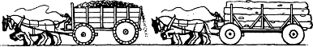

72
You descend from the ridge and trek across a fallow field towards the derelict remains of Castle Demera, an ancient Eldenoran fortress that was besieged and destroyed by the Salonese in the year MS 4417. Its curtain walls and central keep have long since disappeared, and what little remains of its outer walls is now barely recognizable beneath a blanket of thick moss which covers every surface.
You enter the base of the outer walls and discover a flight of slime-smeared steps leading down into a stone chamber which offers some protection from the heavy rain. The mouldering walls of this chamber are buried beneath a profusion of plants and creepers. You take a closer look at the plants and, to your surprise, you discover a clump of laumspur hidden among the vegetation. (There is sufficient Laumspur here for 2 potions. Each Potion of Laumspur will restore 4 ENDURANCE points to your total when swallowed after combat.) Heartened by this unexpected discovery, you settle yourself in the driest corner of the chamber and drift off to sleep.
The trundling sound of heavy wagons awakens you shortly after dawn. The rain has ceased during the night and the ruins are now bathed in warm autumn sunlight that is filtering through gaps in the clouds. On reaching the surface, you look out across the surrounding fields and catch sight of a sunken road less than a mile away to the north. Columns of Eldenoran army wagons are moving along this highway in both directions. You magnify your vision and see that the wagons heading southeast, towards the River Storn, are heavily laden with supplies. The wagons that travel in the opposite direction, towards Duadon, are mostly empty.
{kind=link}

If you wish to go to the highway and attempt to hitch a ride to Duadon aboard one of the returning wagons, turn to 247.
If you choose instead to wait until the highway is empty and then follow it towards Duadon on foot, turn to 196.